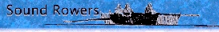

| news | location | programs | membership | photos | roster |
| calendar | volunteers | from the coach | contact us | downloads | links |


Concept II:Ergs, training tips, an online logbook, more
|
Evergreen Rowing: Maas boats, Dreher oars, and more |
Masters' Rowing Association: For adult rowers |
Row2k.com: The rowing news source |
 RowWest: Good rowing clothes, good prices, good service |

USRowing: The national governing body for rowing |
Whirling Girl: The best rowing jewelry around |